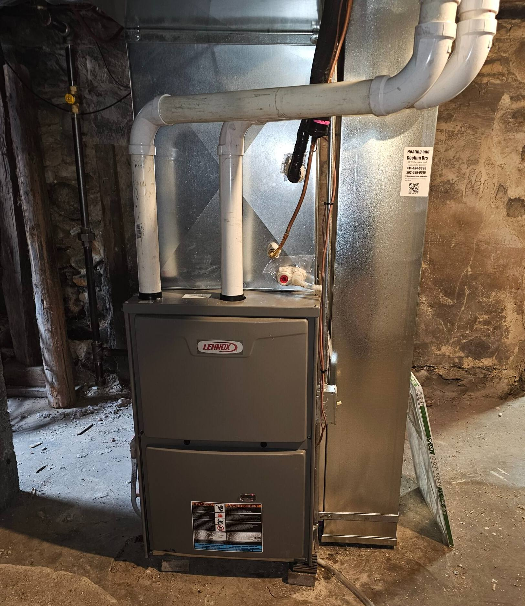
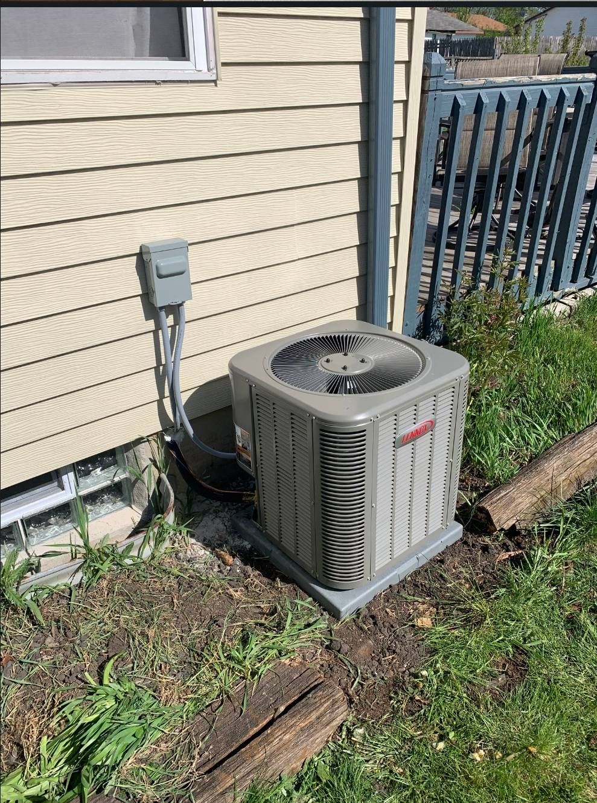
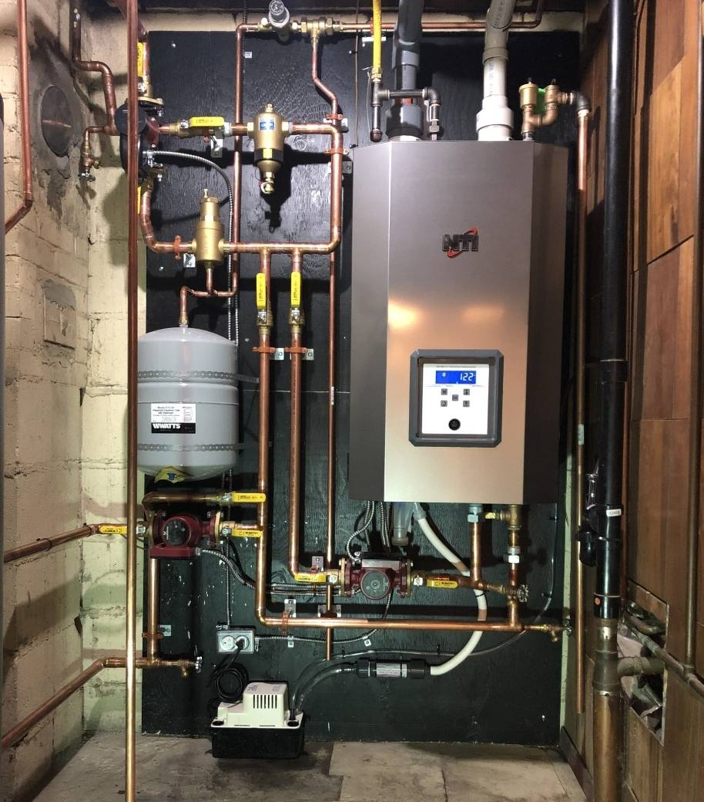

Repair & maintain
Furnaces, central air, boilers, thermostats, filters and ductwork. Emergency service is available 24/7.
Speak with a service tech →Furnace, central air and boiler repairs, tune-ups and replacements. West Allis, Milwaukee, New Berlin and all of Milwaukee County.

Every time you call, you get a service technician who knows the business.
Email pictures of your furnace or central air. The office will reply with questions or a direct quote.
jobs@hvacdrswi.com ↗Furnaces, central air, boilers, thermostats, filters and ductwork. Emergency service is available 24/7.
Speak with a service tech →Explore Lennox and Concord furnace options, with a choice that fits your needs and comfort level.
Explore furnace options →Service and installation for boilers and in-floor heat. Steam systems, too.
Explore boiler services →Yes — Milwaukee is served by this office. Call 414-434-0990.
Real equipment photos from the Drs’ website.


Our approach, in our own words: